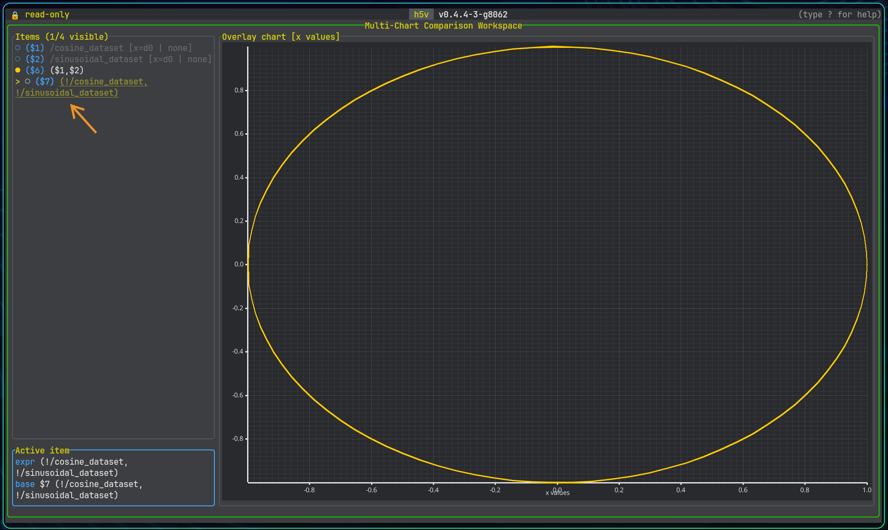

Multichart expressions
Supported references
Multichart expressions can refer to existing chart items, datasets, and attributes directly, but the reference type is always explicit.
| Syntax | Meaning |
|---|---|
$1 | Chart item series by workspace id |
$1[0..256] | Chart item series slice by sample range |
load(/dataset) | Dataset series |
load(/dataset)[..,0] | Dataset series with explicit slicing |
load(/group:trace) | Series-valued attribute on a group or dataset |
!$1:trace | Series-valued attribute on the dataset backing chart item $1 |
load(/group/scalar) | Scalar dataset value |
load(/group/ds:BIAS) | Scalar attribute on a group or dataset |
#$1:SCALE | Scalar attribute on the dataset backing chart item $1 |
Y-series and x/y-series
An expression can produce:
- a normal y-series
- a tuple-based x/y series
Examples:
$1 * #$1:SCALE
load(/signals/sine_wave) + load(/group_preview/offset)
$1[0..512] - $2[128..640]
(load(/group_preview/time), $1 * load(/group_preview:scale))
The tuple form is the most important one for custom x/y plots because it gives you explicit control over both axes.
The same syntax is also used by group preview expressions. In the bundled example, /group_preview defines:
(load(/group_preview/time), (load(/group_preview/value) - load(/group_preview/offset)) * load(/group_preview:scale))
Here is an example of a parametric x/y series using sine and cosine signals to form a circle:
(load(/signals/sine_wave), load(/signals/cosine_wave))

Interactive prompt
Open the expression prompt with:
Enterorein multichart mode, ormchart prompt
The editor stays below the chart, so opening it does not change the plot viewport.
Enter starts a new expression. e loads the selected series expression so you can update it in place.
EntersubmitsTabapplies the selected suggestionUpandDownmove through suggestionsEsccloses the editor
Invalid expressions are reported inline. Suggestions include chart item ids, dataset paths, and attribute names when they can be resolved from the current file.
Practical tips
- add a raw dataset first so you have stable
$1,$2, and$3references to build from - use
$id[start..end]when you want to align or compare only part of an existing chart item - use
load(/path:ATTR)when you want an explicit attribute lookup on an object or dataset - prefer explicit dataset slicing when the same dataset can be interpreted several ways